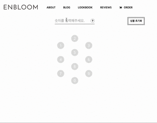

Enbloom 인블룸
씸플한 디자인이 인상적인 인블룸은 커스터마이징 심볼 주얼리 브랜드 플랫폼입니다.
사용자가 원하는 패턴의 2d를 생성하게 되면 해당하는 패턴을 통해 3d프린터를 통해 해당 결과물을 만들어내는 서비스입니.
해당 서비스는 Front-end/Back-end 구현 및 three.js를 통한 2d 객체 생성 및 3d 프린터 파일을 생성하는 작업을 하였습니다.
